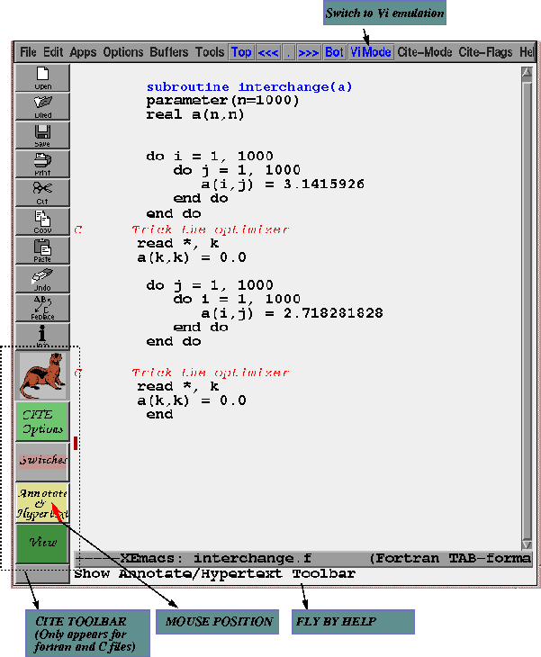

In this section we will use a simple program to show the kinds of things that are possible from within CITE. Think of it as a short tutorial on using CITE.
Consider the following program (it has been loaded into XEmacs/CITE). It has two loop nests. As written the first loop nest suffers from performance problems. Any guesses why?

Remember that fortran arrays are stored in memory in column major order. So what does that mean? Each iteration of the inner loop ( 'j' loop) might result in a cache miss for the array reference a(i,j) . So this loop nest has poor cache performance. The second loop nest is in the correct order and achieves better cache performance.
Since MIPS Pro Compiler is a cache aware compiler it will automatically interchange the loops in the first loop nest we will see from CITE
Annotating Loop Nests in CITE